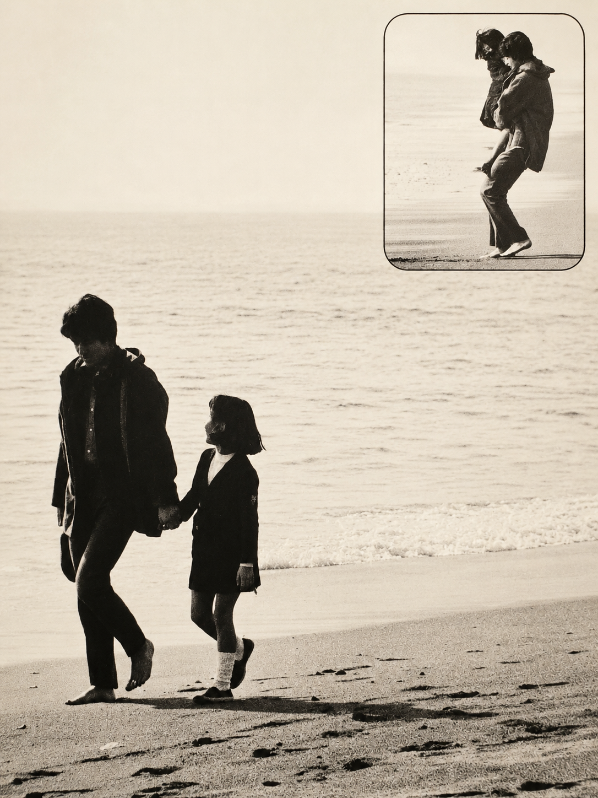

Music, Memories, and Family Reflections
音楽、思い出、そして家族として見てきた兄の姿。
Memories Held by Family
My brother's singing voice, the years he spent with music, and the memories I carry as his family are things I would like to leave here in my own words.
This is not meant to be a formal history or a place for public discussion. It is a personal record from the point of view of his younger sister, based on what I remember and what remains important to our family.
My brother was known as a musician, but to me he was also a kind and warm person with a pure heart. Those parts of him are just as important to remember as his music.
Through photos, words, and small pieces of memory, I would like to keep these family memories in a way that feels honest and natural to me.
This may not be a large record, but it is an important part of our family history. I would like to continue keeping these memories with care.
大切な記憶に感謝を込めて
兄の唄声、音楽と共に歩んだ時間、そして家族として見てきた兄の姿を、 私なりに書き留めておきたいと思います。
ここには、妹である私が覚えている兄のこと、 家族の中に残っている思い出を、自分の言葉で少しずつ残していきます。
ミュージシャンとして知られていた兄だけでなく、 家族の中で見せていたやさしさ、清らかな心、そして人としての温かさも、 私の記憶の中には今も残っています。
写真や言葉、ふとよみがえる記憶の断片を、 無理のない形で残していけたらと思います。
大きな記録ではありませんが、家族の中に残る大切な記憶として、 これからも大切に残していきたいと思います。
Family Journal
Personal family memories of my brother, written from my own point of view.
兄について覚えていることを、家族の記録として少しずつ残していきます。
Read the Journal